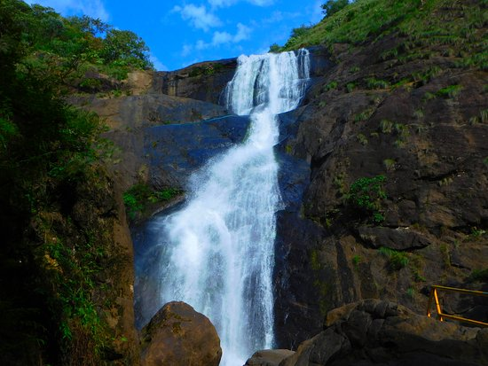
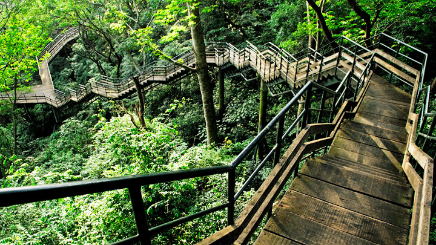
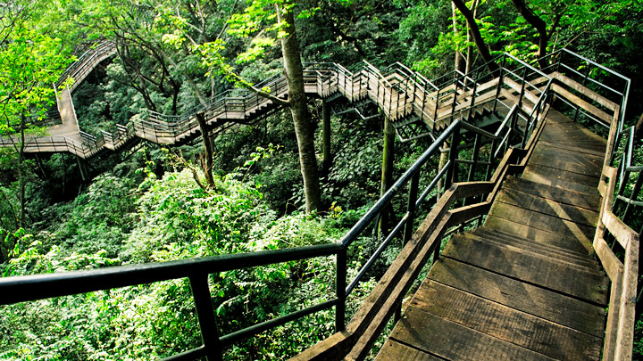
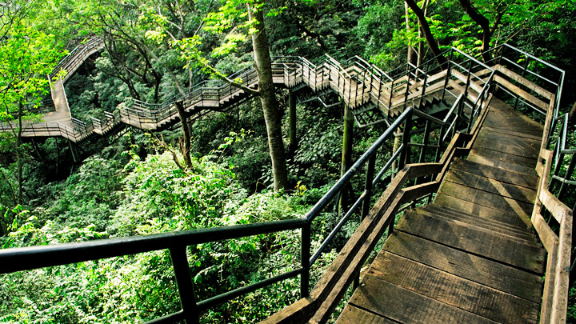
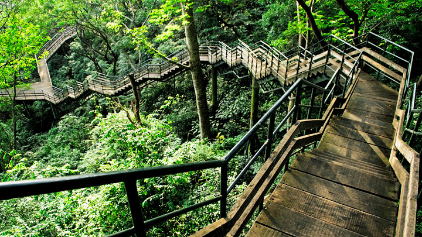

Major Attractions

 


Kollam (erstwhile Quilon) is a southern district of Kerala, located 70 km north of the state’s capital Thiruvananthapuram. It is flanked by the Arabian sea on the west, Tamil Nadu on the east, Alapuzha and Pathanamthitta districts on the north and Thiruvananthapuram district on the south. Housing a population of over 2.6 million, Kollam is one of the more densely peopled districts of India. The head quarters of the district administration is centred at Kollam City, the district’s capital. Administratively, the district is composed of two revenue divisions viz. Kollam and Punalur with three taluks each under them.
Kollam has been the centre of cashew industry in Kerala from the time of the Portuguese in 16th c. Having hundreds of working cashew factories in the district, Kollam still continues to be the largest processed cashew exporter in India. Neendakara and Thangasseri, the two fishing harbours and ports in Kollam, support a thriving marine industry providing a variety of employment and livelihood to people in large numbers.
Like the rest of Kerala, Kollam is climactically temperate with a generally sunny weather peaking in heat during April-May. The monsoon falls from June to September. The soil is varyingly loamy, laterite and forest at the coastal regions, mainland and the forest areas respectively.
